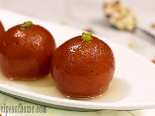

|  |
Gulab Jamun
Price 10|| Category: Desserts Gulab jamun is a milk-solid-based sweet from the Indian subcontinent, |
 |
Gajar ka Halva
Price 20|| Category: Desserts It is made by placing grated carrots in a pot containing a specific amount of water, |
|
Pastries
Price 25|| Category: Desserts The word "pastries" suggests many kinds of baked products made from ingredients such as |